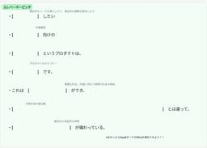

スタイル・エッジ技術ブログ
https://techblog.styleedge.co.jp/
士業集客支援/コンサルティング企業 スタイル・エッジ・グループのエンジニアによる技術ブログです。
フィード

インセプションデッキでスクラム改善してみた！
スタイル・エッジ技術ブログ
はじめに こんにちは！システム事業部のkamです。 私は2024年9月に中途で入社し、現在はあるプロジェクトのスクラムマスターとして業務に携わっています。 以前、弊社のブログで公開された記事「アジャイルソフトウェア開発ってなんなのだ。 - スタイル・エッジ技術ブログ」では主にスクラム・アジャイルの概要について解説していました。 今回は、私が実際にスクラムマスターとして取り組んでいる内容の一つであるインセプションデッキについてお話ししたいと思います。 自己紹介 とはいえ、まずは私が何者なのかを簡単に自己紹介します。 私は40代のエンジニアで、これまでPM（プロジェクトマネージャー）やPL（プロジ…
2日前

エンジニアが司法書士事務所で現場体験！ユーザー視点で見えたシステム改善の秘訣
スタイル・エッジ技術ブログ
はじめに こんにちは、sugitenです！ システムエンジニア歴3年で、現在は自社プロダクトであるLeadU⁺債務整理の開発チームに所属し、開発や運用・保守の業務を担当しています。 前述の通り、私は普段システムエンジニアとして業務に携わっているのですが、後述する経緯により、LeadU⁺債務整理の実際の利用者である司法書士事務所様にて実際の業務を体験させていただく機会がありました。 今回はそんな事務所様での業務体験談について執筆しようと思います！ システム紹介 LeadU⁺債務整理は、弁護士・司法書士事務所向けに開発されたBtoBのシステムです。 債務整理案件の管理運営業務に特化した業務支援シス…
1ヶ月前
React で QR コードを生成して、タイトルを QR コードの下に描画したうえで画像ファイルとしてダウンロードしてみたい！！
スタイル・エッジ技術ブログ
はじめに こんにちは、しおです。少し前までひどく暑かったのに、もうすっかり年の瀬ですね。 冬っぽい画像を生成してみたので、ぜひ癒されてください。 癒されましたね。 さて、いま私が開発で携わっているプロダクトにて、『QR コード*1をアプリケーション内で生成して画像として表示＆ダウンロードしたい。その際に、任意のタイトルを画像に埋め込みたい。』という要件が発生しました。 そこで、今回はその対応で実際に使用した qrcode.react という React 向けのライブラリを用いて React アプリケーション内で QR コードとタイトルを描画したうえで画像ファイルとしてダウンロードさせるまでの流…
2ヶ月前
SoftEther VPN運用の裏側 – 台風による緊急対応の学び
スタイル・エッジ技術ブログ
はじめに こんにちは！ システム事業部のfujikoです。 新卒で入社し現在2年目で、社内のITインフラ周りを担当する基盤チームに所属しています。 具体的な業務内容は、プロダクトインフラの構築・運用、メールサーバー・VPNサーバーの運用保守、その他ITサポートなど多岐にわたります。 その中でも特にVPNの運用業務は、リモートワークの普及に伴いその重要性が高まってきています。 8月のある日、台風が接近し、普段は出社勤務を行っている社員が在宅勤務に切り替える動きが増えたことで、VPNアカウントの発行申請が一気に集中しました。 その際、我々のチームは迅速に連携してVPN環境を整え、リモートワークへの…
3ヶ月前
Amazon S3にある大量のオブジェクトをGoogleドライブに移行しました
スタイル・エッジ技術ブログ
はじめに こんにちは！システム事業部のNTです。 ある日、クライアント様から「スタイル・エッジ提供のシステムに保存されているファイルを、Googleの共有ドライブに移行したい」というご相談をいただきました。 システムに登録されている現状のファイル数を確認すると約50万にもなり、共有ドライブに移行するにあたっては作業時のパフォーマンスが大きな課題となりました。 また、システム上で表示されているファイル名と、ストレージとして利用しているAmazon S3に保存されている実際のオブジェクト名が異なるため、移行時にオブジェクトのリネーム処理を挟む必要があることも課題でした。 上記2つの課題を克服しなが…
4ヶ月前
AWS DMSを使って再構築したDBへデータ移行させた話
スタイル・エッジ技術ブログ
はじめに こんにちは。システム事業部のTAKです。 記事を書くのは1年7ヶ月ぶりで、今回で3回目となりました。 入社直後に立ち上げに関わった社内システム（以下、システムA）も5年目に突入しようとしています。 運用年数を重ねると、構成が混沌としてくることがあります。 突貫対応による不要な枝葉や緊急対応として迂回したネットワーク構成、新しいシステムや要件に対応するために別VPCに切り出されたリードレプリカなど…… そう、混沌としてきたのです！ そうした経緯があり、今後のシステム間連携などを考えるうえで、システムAが持つRDSのVPCやサブネットなどのネットワーク構成を再構築することとなりました。 …
5ヶ月前
CCNA合格体験記
スタイル・エッジ技術ブログ
はじめに こんにちは！ システム事業部のaoです。新卒で入社して3年目になります。 現在、ネットワークチームに所属し、社内およびクライアントのネットワーク設計から保守まで担当しております。 今回は、先日合格したCCNAの合格体験記を書いていきます！ created by DALL-E CCNAとは CCNA（Cisco Certified Network Associate）は世界最大のネットワーク機器メーカーであるCisco Systemsが提供する資格です。CCNAを取得することで、ネットワークの基礎知識およびCisco機器（ルーター、スイッチ、アクセスポイント）に関するスキルを証明できま…
6ヶ月前
GitHub Copilot Businessをチームに導入してみた
スタイル・エッジ技術ブログ
はじめに こんにちは。システム事業部イネイブリングチームに所属しているOrochiです。 イネイブリングチーム*1は、開発チームの開発生産性向上の活動や技術支援などを行っています。 その取組みの一環として、GitHub Copilot Businessを導入しました。 現在は、開発チームメンバーであれば申請することで誰でも使える状態になっています。 Created by DALL-E この記事では、GitHub Copilot Businessを導入した背景や注意点、導入後の効果などについて紹介します。 GitHub Copilotとは？ この記事を読んでくださっている方は既にご存知かと思いま…
7ヶ月前
Aurora Serverless v2を導入してみた
スタイル・エッジ技術ブログ
はじめに こんにちは。システム事業部のgakiです。新卒入社3年目にして初めての技術ブログ執筆です。 私事ではありますが、最近AWS Certified Solutions Architect - Professionalに合格したこともあり、最近は特定の言語やプロダクトに偏ることなくAWS周りの相談に乗ったり、新規案件のインフラ設計なども行っています。 さて、今回のテーマはAurora Serverless v2についてです。基本的な仕様や導入のきっかけについて書いていきます。 generated by DALL-E3 Aurora Serverless v2とは何か AuroraはAmaz…
8ヶ月前
読書でチームビルディング！？社内輪読会の魅力と実践レポート
スタイル・エッジ技術ブログ
はじめに こんにちは！システム事業部のChunです。弊社技術ブログの運営委員をしており、社内の魅力を発信するため、ネタ探しの日々を送っています。 そんな私が社内チャットでネタを探していたある日、ふと画面をスクロールする指が止まりました。目に入ってきたのは「輪読会」というワード。 どうやらプロダクトチームの有志が同じ本を読み、その内容について意見を交わしあっているという情報を入手しました。 これは面白そう！さっそく実際に会を主催している社員にインタビューしました！ 今回はインタビューを通して得られた輪読会のリアルな実態をご紹介いたします！ generated by DALL-E3 なぜ彼らは輪読…
9ヶ月前
【モダン開発 #4】モダン開発で工夫した8個のこと
スタイル・エッジ技術ブログ
generated by DALL-E3 はじめに 具体例の紹介 各概念における抽象クラスの作成 量産対象となる具象クラスの記述量を減らす LaravelDataの活用 連想配列と引数のアンパックの活用 リフレクションによる内部情報の利用（黒魔術） バックトレースによる呼び出し元情報の参照（暗黒魔術） 実際の使用にあたって ビジネスルール検証におけるValidatorの活用 従来パターンにおける課題 Validatorを用いる前提で宣言的に記述する方式 オブジェクトが入れ子になっている場合の責務の所在 その他ポイント フロントエンドバリデーションとの数値ルール共有 Eloquent Model…
10ヶ月前
【モダン開発 #3】TDDに挑戦してみた！
スタイル・エッジ技術ブログ
はじめに こんにちは！スタイル・エッジの ike です。 過去何回かに渡って記事を連載していましたが、モダン開発#2までを執筆していた SHISO さんからバトンパスを受けて、今回は実装者としてプロジェクトに参画した視点から執筆します！ 弊社ではある業務システムの開発プロジェクトにて、テスト駆動開発（TDD）に挑戦しました。しかし、結果的にはチームメンバーの経験の少なさ故の難しさがあり、途中でユニットテストの導入を最優先とした方針に転換することになりました。 そこで、TDDに挑戦した経緯や所感、途中で方針転換することになってしまった理由、その中で得られた恩恵・気付きを振り返っていきます！ TD…
1年前
【モダン開発 番外編】気が利くDTO！データオブジェクトライブラリ「Laravel-data」を導入してみた
スタイル・エッジ技術ブログ
generated by DALL-E3 はじめに こんにちは。前回の記事ではコード標準化に勤しんでいたneueです。 連載中のモダン開発を行う際、自身はプロジェクトの本メンバーではないものの、 処理の共通化や骨組みの構築などを通して、開発支援に近い立場で参画していました。 モダン開発を実現するにあたり、設計思想の遵守に必要なロジックを愚直にコードで表現していると、早い段階で手続きの多重化やコード量の増加と向き合うことになるのではないかと思います。 その設計思想に寄り添って作られたフレームワークがあれば話は別ですが、実際のところは既存のフレームワークとの共存方法を探りつつ、フレームワークがもた…
1年前
Google Workspace ユーザー会に登壇しました！
スタイル・エッジ技術ブログ
はじめに 皆さんこんにちは。スタイル・エッジのはるです🌞 とあるご縁をいただき、2023年10月27日、渋谷にあるGoogle Japan のオフィスにて開催されたUSEN Smart Works社主催の Google Workspace ユーザー会に登壇してきました！ 今回はユーザー会に登壇するに至った背景をはじめ、私たちが当日語ったこと、そして感じたことを思いのままに書いていきたいと思います。 Google Workspace ユーザー会で登壇することになった経緯 ユーザー会とは そもそもユーザー会とは、ある企業の製品やサービスを利用するユーザー同士や、サービスを提供する企業とユーザーが情…
1年前
【モダン開発 #2】実践！DDD × レイヤードアーキテクチャ in Laravel
スタイル・エッジ技術ブログ
はじめに こんにちは！スタイル・エッジの SHISO です。 弊社ではある業務システムの開発プロジェクトにて、ドメイン駆動設計（DDD）に挑戦しました。 ※ 詳しい経緯についてはこちら 今回は、Laravelを利用するという条件の下、DDDとレイヤードアーキテクチャを実現していくにあたり、具体的にどのような設計方針で進めたのか、またどのように実装に落とし込んだのかなど、紹介していきたいと思います。 目次 はじめに 目次 アーキテクチャ ディレクトリ構成 各層の責務や実装方針、特徴 Domain層 エンティティ・値オブジェクト生成時のデータ整合性担保のタイミング エンティティ識別子はDBのAut…
1年前
『GitLab に学ぶ 世界最先端のリモート組織』に学ぶ、リモートチームにおける心理的安全性の醸成
スタイル・エッジ技術ブログ
はじめに こんにちは、しおです。 前回は MySQL のコードリーディングしてみる、という記事を書きました。 techblog.styleedge.co.jp 今回はコードリーディングの続きではなく、最近読んだ面白い本の一部を紹介してみようと思います。 何の本か 今回読んだのは、『GitLab に学ぶ 世界最先端のリモート組織』という本です。 www.shoeisha.co.jp 世界 67 カ国以上に 2,000 名以上の従業員を抱える GitLab 社が、リモートワークにおける方法論やカルチャーの醸成方法をまとめて無料で公開している GitLab Handbook を読み解いた本です。 G…
1年前
【モダン開発 #1】「ドメインモデリング」こんな感じでやりました
スタイル・エッジ技術ブログ
はじめに こんにちは！スタイル・エッジの SHISO です。 弊社ではある業務システムの開発プロジェクトにて、ドメイン駆動設計（DDD）に挑戦しました。 ※ 詳しい経緯についてはこちら 今回は、DDDの中でも肝になってくる「ドメインモデリング」について、実際にプロジェクトで取り組んだ内容を紹介していきたいと思います。 ドメインモデリングとは 簡単に言うと「ドメインモデルを作成すること」ですが、先人達の著書*1より整理すると、下記のような定義であると言えます。 ソフトウェアを適用する領域から、問題解決のためにソフトウェアに落とし込む要素を取捨選択すること システムにとって何の情報が必要かについて…
1年前
【連載始めます】DDD・TDDに挑戦してみた！
スタイル・エッジ技術ブログ
はじめに こんにちは！スタイル・エッジの SHISO です。 この度弊社では、数年間運用してきた業務システムをフルリプレイスする機会があり、 その中でドメイン駆動設計（DDD）やテスト駆動開発（TDD）などを取り入れたモダンな開発に挑戦してみました。 今回はこのような挑戦に至った経緯に触れつつ、 若手＆モダン開発未経験メンバー中心の体制で進行するにあたり実際に行った取り組みや工夫した点を、 連載形式でご紹介していこうと思います。 経緯 今回フルリプレイスすることになった業務システムは、ありがたいことに約8年間クライアントの皆様にご利用いただいておりました。 快適にご利用いただけるよう、日々運用…
1年前
デザイナーからディレクターにジョブチェンジした時の話
スタイル・エッジ技術ブログ
こんにちは！システム事業部のKOです。 スタイル・エッジに入社してはや6年目となります。 普段はディレクターとして案件の進行管理やクライアントワークと 幅広い方々と関わりながら日々仕事をしています。 そんな私ですが、元々はデザイナーとして中途入社しておりまして、 今回ディレクターにジョブチェンジした時の話を記事に起こしてみることにしてみました。 職種を変えた上で感じたことをお伝えできればと思います。 私がディレクターになったきっかけ 前提として…決してデザインが嫌いになったからとかではございません！笑 自分自身のキャリアを考えた時に「より企画段階から関わりたい」「デザイン以外にもクライアントと…
1年前
AppSheet で社内向けツールを作った話
スタイル・エッジ技術ブログ
はじめに こんにちは。スタイル・エッジの YH です。 前回のブログ執筆からおよそ１年半が経過し、新卒で入社したてホヤホヤだった私もついに３年目…😨 今まで多様な業務を経験させていただきましたが、今回はノーコード開発に携わった際に利用した「 AppSheet 」というツールをご紹介します。 ※本記事では2023年7月現在の情報を掲載しています。 最新の情報は AppSheet 公式リファレンスをご覧ください！ アプリをノーコードで開発しよう ノーコード開発とは、コーディングなしでシステム開発を行う手法のことを指します。 GUI で処理を作成でき、インフラ関連の構築も不要であることが特徴で、非エ…
2年前
RPA入門
スタイル・エッジ技術ブログ
こんにちは！スタイル・エッジの310です。 簡単に自己紹介をしますと 出身は愛知県、色んな意味で激動の時代を生き抜いてきた1985年生まれです。 帰宅後は3歳になる娘と、日々一緒にお風呂入る入らない論争を繰り広げています。 職歴は一風変わっておりまして 家屋の壁紙を貼る仕事、車のライン工場、パチンコ屋、バンドマン（楽曲制作/編集）、アパレルなどを経験し 前職は『ITコンサルタント』として、主にRPAツールを用いた業務効率化の提案、構築をしていました。 現在は『コーポレートエンジニア』として、ITサポートや端末、アカウントの準備といった基本となる業務や、AppSheetやRPAを用いた業務の効率…
2年前
Amazon ECS Execを使ってみた
スタイル・エッジ技術ブログ
はじめに こんにちは！スタイル・エッジ・グループのKYTです。 現在私はAmazon ECS(以下ECS)のAWS Fargate(以下Fargate)にて、 弊社のシステムを運用できないか試行錯誤中です。 今回はそんな中で学んだECS Execについて書きたいと思います。 ECS Execとは ECS Execは、ECSで実行中のコンテナにログインするための機能です。 この機能の画期的なところは、Fargateではできなかった各コンテナへのログインを可能にした点です。 ECS Execの登場以前、Fargateで起動したコンテナは原則ECSコンソールを駆使して状態を確認することしかできません…
2年前
私のAnsibleのTips
スタイル・エッジ技術ブログ
こんにちは、システム事業部のTMです。 普段はシステムの開発・保守やサイトの運用保守をしています。 弊社では、Ansibleでサーバーやシステムの設定管理をしています。 管理している中で見つけたAnsibleのTipsを紹介したいと思います。 変数名 変数名にハイフンを使っていて失敗することがよくありませんか？ FILE-OWNERというハイフンを使った変数を使ったPlaybookの実行例が下記です。 FILE-OWNER という変数名なのにFILEとなっています。変数名のハイフン以降が認識されていません。 fatal: [web]: FAILED! => {"msg": "The task …
2年前
仕事で行き詰まった時に、やっていること3つ
スタイル・エッジ技術ブログ
スタイル・エッジ・グループに入社して5年目のリンです。 社会人歴はそれ以上に長いのに、未だに課題に行き詰まったり 悩んだり改善したりを日々繰り返しています。 今回は、個人的によく行き詰まる課題に対して心掛けていることをまとめました。 職種問わず、誰かの行き詰まりのヒントになればと思います。 最初に「みんなが同じ認識」という状況を作る 認識を合わせる コミュニケーション全般に言えることですが、 複数人で話を進めるうちに、話がズレ始めてしまい、いつの間にか迷路に入り込んでしまうことがあります。 原因はその時々だとは思いますが、前提として実は 「その場にいる全員の理解・認識のレベルにばらつきが発生し…
2年前
エンジニアも知っていると嬉しいデザインの原則
スタイル・エッジ技術ブログ
こんにちは！システム事業部のMJです。 もうすぐ新卒4年目、インターンも含めると5年目になり、年次を重ねるごとにさまざまな経験をさせていただいています。 ここ1年ほど新規事業のシステム開発に携わっていますが、その中で特に記憶に残ったのがシステムのデザインを1から担当したことでした。 （この話をすると、毎日Adobe XDと睨めっこしながら、2ヶ月ほどピクセル単位の修正をしていた記憶が蘇ってきます…） 上記のようにシステムのデザインとまではいかなくても、UI設計を行ったり、プレゼン資料を作成したり…とエンジニアがデザインをする機会は想像以上にあり、デザインの経験がなくても知識を身に付けておくだけ…
2年前
CDKでCloudFormation StackSetsのデプロイを行ってみる
スタイル・エッジ技術ブログ
はじめに お世話になっております。システム事業部のONです。 前回の執筆からちょうど2年になります。 中途入社して1カ月でアドベントカレンダー書いてと言われ、2~3カ月で技術ブログを書いてと言われ... どちらもネタがないとオロオロしながら書いた記憶が鮮明に残っています。 そんな今回もネタがなくオロオロしているので試したかったことを実践してみます。 課題発生 ここ半年程、CloudFormationやSAM, CDKを触ることが多くありました。 これらの沼は深く、私はまだまだくるぶしぐらいしか浸かれていない状況です。 そんな最中、同一AWSアカウントの全リージョンにデプロイする内々のCDKを作…
2年前
WSLアプリを入れてsystemctlを使おう！
スタイル・エッジ技術ブログ
はじめに こんにちは。システム事業部のTAKです。 私はWindows10内のWSL環境をローカル開発環境として使用しているのですが、従来のWSL環境ではsystemctlが使えなかったため、サービスの登録ができないなど少し残念な思いをしていました。 （なおWindows11&Ubuntu22.04.1であれば、昨年4月頃のWindows Updateにより今回紹介する内容が既に反映されています） ところが昨年の11月下旬にWSLアプリがMicrosoftストアで正式リリースとなりました。 元々Windowsに入っていたWSLをアプリとして切り出した形になりますが、主に以下のメリットが増えまし…
2年前
アジャイルソフトウェア開発ってなんなのだ。
スタイル・エッジ技術ブログ
はじめに こんにちは、新卒で入社してもうすぐ3年目に突入するみのみのです。 ここ半年ほど、担当プロジェクトの新米PMとして奮闘していました！📚 慣れないながらも試行錯誤し、辿り着いたアジャイルソフトウェア開発について書いてみたいと思います。 世の中のPM業をしている方、だけでなく開発者の方にとっても普段のお仕事の改善に繋がるかもしれません。 最後までお付き合い頂けますと幸いです💌 そもそもアジャイルソフトウェア開発って？ アジャイルソフトウェア開発とは、短期間で実装・リリースを繰り返し、顧客満足度の最大化を図るプロジェクト開発手法です。 そして、アジャイルソフトウェア開発を行う上で重視したいマ…
2年前
2022年もアドベントカレンダー開催しました！
スタイル・エッジ技術ブログ
はじめに こんにちは！今年スタイル・エッジ・グループに新卒入社したべぷおじです。 入社してもう半年以上経ちました。月日の流れは早いものです… さて、我々スタイル・エッジ・グループのシステム事業部では、ナレッジを通した社員同士の交流を兼ねてアドベントカレンダーを毎年開催しています。 2022年は総勢59名でアドベントカレンダーを開催いたしました！ そもそもアドベントカレンダーとは？ アドベントカレンダーとは、本来クリスマスまでの期間に日数を数えるために使用されるカレンダーのことですが、 IT業界では12月1日から25日まで1日に1つずつ、技術やマメ知識などを記事として投稿していくイベントのことを…
2年前
PHPもアトリビュートでAOP！！
スタイル・エッジ技術ブログ
はじめに こんにちは！未だにPHP8.1で登場したEnumに心躍らせているSHISOです。 さて、今回はJavaのSpringフレームワークでできるアスペクト指向プログラミング（AOP）に憧れ、PHP8.0でリリースされたアトリビュートを使用して同じようにAOPを実現させてみました。 （ちなみにPHP8.0未満であってもLaravel 5.x~8.xをお使いであれば、Laravel-Aspectというパッケージを使ってAOPできるそうなので、興味のある方は試してみてください。） 先に今回の実装サンプル一部をチラ見せすると、クラス内に個別のgetter処理を書かずとも、アトリビュートの指定だけで…
2年前